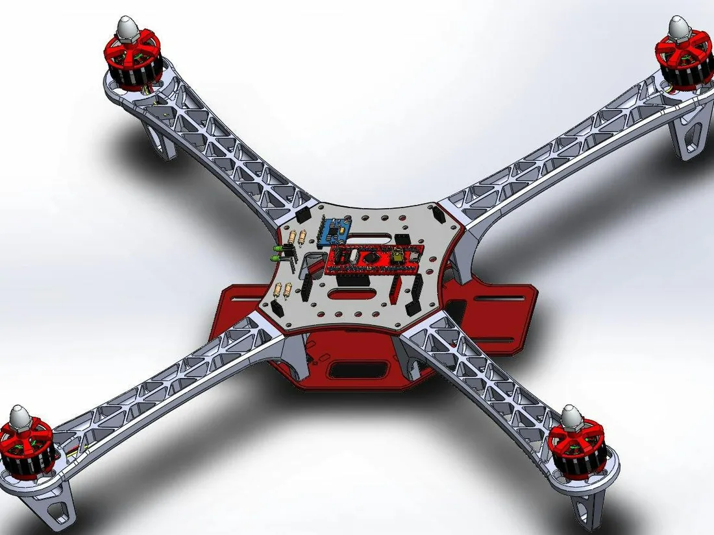
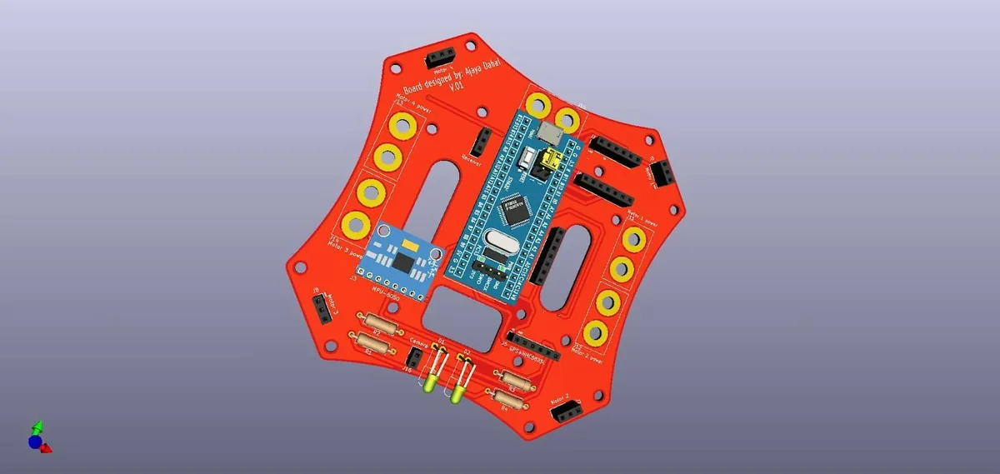

2020 · Built with Pankaj Shrestha
DIY Return-to-Home Drone on an STM32 Blue Pill
A quadcopter whose flight controller is an STM32F103C8T6 Blue Pill, following Joop Brokking's YMFC-32 autonomous design. I drew the flight-controller board in KiCad and published the files, including Gerbers, on GrabCAD.

At a glance
- MCU
- STM32F103C8T6 on a Blue Pill board
- Design
- Joop Brokking's YMFC-32 autonomous flight controller, with return-to-home
- Firmware
- Built and flashed with the Arduino IDE
- Board
- Drawn in KiCad, with Gerber files
- Team
- Ajaya Dahal and Pankaj Shrestha
Credit where it is due: the flight-control design and firmware come from Joop Brokking's YMFC-32 autonomous project. We built the drone and drew the controller as a KiCad board.
The flight-controller board
